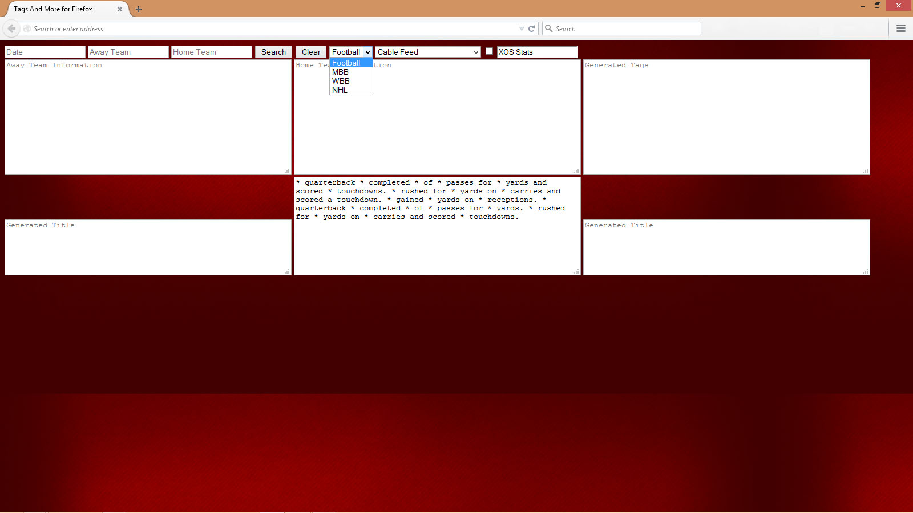

Guide to Ingest Captures
Vault Information
Author; Daniel McFarland
The image below shows the page when first opened.
Copy a desired video title from the vault. Paste into the first text box as shown below.
Copy the date then paste into the 'Date' input field.
Image below shows the pasted date.
Copy the away team. Paste in the 'Away Team' input field.
Copy the home team. Paste in the 'Home Team' input field.
Click the 'Search' button.
Notice how more than one team shows up.
To focus on one team copy more of the name of the team.
Paste the information into the correct input fields. Then click search.
Now there is only one team's information in each box.
Copy the tags.
Copy the title and tag information into your text editor.
Remove the feed from the title and copy.
Paste this information into your browser.
Add espn to the end of the title.
Look at the link to verify it is correct.
The information shown in the box directly underneath the home team assists in writing a description about the game.
The 'Generated Title' will print out a title used for naming games. The check box shown at the top of the document will automatically add '_xosstats' to the end of the title.
If desired I can fill in a database for the following sports.
Teams can also be searched with their mascot name.